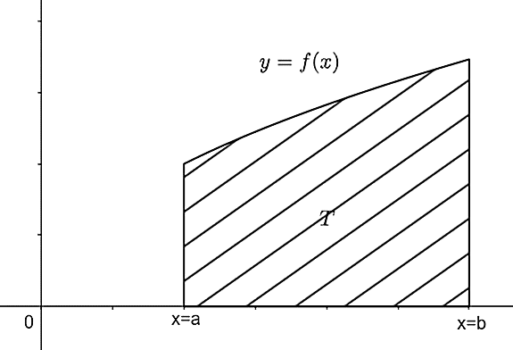
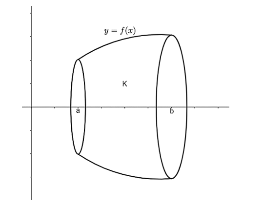

Теорија помоћу које решавамо задатке код примене одређеног интеграла
`\cdot `Својства одређеног интеграла
Познавање својстава одређеног интеграла веома је важно при изучавању овог појма. Навешћемо основна својства одређеног интеграла.
1. Ако је функција `f` интеграбилна на одсечку `[a,b]` тада је за било који реалан број `k` и функција `kf` интеграбилна на истом одсечку и важи једнакост:
\[∫_{a}^bkf(x)dx=k∫_{a}^bf(x)dx.\]
2. Ако су функције `f` и `g` интеграбилне на одсечку `[a,b]`, тада су и функције `f+g` и `f-g` интеграбилне на истом одсечку и важи једнакост:
\[∫_{a}^bf\left(x\right)±g\left(x\right)dx=∫_{a}^bf\left(x\right)dx\pm∫_{a}^bg\left(x\right)dx.\]
3. Ако постоји `∫_{a}^bf(x)dx` и ако је `c` произвољна тачка између `a` и `b`, тада постоје и интеграли `∫_{a}^cf(x)dx` и `∫_{c}^bf(x)dx`, и важи једнакост:
\[∫_{a}^bf(x)dx=∫_{a}^cf(x)dx+∫_{c}^bf(x)dx.\]
4. Ако је функција `f` интеграбилна на одсечку `[a,b]` и \(f(x) \geq 0\) за \(x \in [a, b]\), тада је:
\[∫_{a}^bf(x)dx\geq0.\]
5. Нека су `f` и `g` интеграбилне функције на одсечку `[a,b]` и нека је \(f(x) \geq g(x)\) за \(x \in [a, b]\). Тада важи неједнакост:
\[∫_{a}^bf(x)dx\geq∫_{a}^bg(x)dx.\]
6. Ако је функција `f` интеграбилна на одсечку `[a,b]`, тада је и функција `|f|` интеграбилна на истом одсечку и важи неједнакост:
\[ ∫_{a}^bf(x)dx\le∫_{a}^b\left|f\left(x\right)\right|dx.\]
`\cdot `Њунт-Лајбницова формула
Теорема 1. Нека је `f` функција дефинисана и непрекидна на одсечку `[a,b]` и нека је `\Phi` функција дефинисана на следећи начин:
\[\Phi\left(\beta\right)=βf(x)dx, β∈a,b. \]
Тада је `\Phi` једна примитивна функција функције `f`.
Теорема 2. Њутн-Лајбницова теорема. Ако је `f` функција дефинисана и непрекидна на одсечку `[a,b]` и ако је `F` било која њена примитивна функција, тада важи једнакост:
\[ ∫_{a}^bf(x)dx = F\left(b\right)-F\left(a\right)\]
`\cdot `Површина
Теорема. Нека је функција `f` дефинисана и непрекидна на одсечку `[a,b]` и нека је \(f(x) \geq 0\) за \(x \in [a, b]\). Тада је површина `P` криволинијског трапеза испод криве `y=f(x)`, над одсечком `[a,b]`, једнака одређеном интегралу функције `f` на одсечку `[a,b]`, односно:
\[P=∫_{a}^bf(x)dx.\]
`\cdot `Дужина лука криве
Теорема. Нека је у равни `О х у` задата крива `y=f(x)`, где је функција `f` непрекидна и има непрекидан извод на одсечку `[a,b]`. Тада дужина лука `l` дате криве од тачке са апсцисом `a` до тачке са апсцисом `b` износи:
\[l=∫_{a}^b\sqrt{1+f'(x)^2}dx.\]
`\cdot `Запремина
Теорема. Нека је функција `f` дефинисана и непрекидна на одсечку `[a,b]` и нека је \(f(x) \geq 0\) за свако \(x \in [a, b]\). Тада је запремина обртног тела `K`, које настаје обртањем око x-осе криволинијског трапеза испод криве `y=f(x)` над одсечком `[a,b]` једнака:
\[ V(K)=\pi∫_{a}^bf(x)^2dx \]
`\cdot `Површина задата параметарски
Теорема. Површина равне фигуре, ограничене кривом, која је задата у параметарском облику. Ако су `x = x(t), \quad y = y(t), \quad 0 \leq t \leq T` параметарске једначине део по део глатке просто затворене криве `C`, орјентисане у смеру супротном кретању казаљке на сату и ограничавајући слева од себе површину `S`, онда је:
\[S=-\int_{0}^{T}y\left(t\right)x^\prime\left(t\right)dt=\int_{0}^{T}x\left(t\right)y^\prime\left(t\right)dt\quad или\quad S=\frac{1}{2}\int_{0}^{T}\left(x\left(t\right)y^\prime\left(t\right)-y\left(t\right)x^\prime\left(t\right)\right)dt. \]
`\cdot `Површина у поларним координатама
Теорема. Површина `S` равне фигуре `OAB`, ограничена графиком непрекидне функције `\rho=\rho\left(\varphi\right)` и двема полуравнима `\varphi=\alpha и \varphi=\beta\left(\alpha<\beta\right)`, једнака је:
\[S=\frac{1}{2}\int_{\alpha}^{\beta}\rho^2\left(\varphi\right)d\varphi.\]
`\cdot `Дужина лука криве дате параметарски
Теорема. Ако је крива дата једначинама `x=x\left(t\right),y=y\left(t\right)\ \left(t_0\le t\le T\right)`, где су `x,y` непрекидно диференцијабилне функције на сегменту `[t_0, T]`, онда је `L` дужина лука криве једнака:
\[ L=\int_{t_0}^{T}\sqrt{\left(x^\prime\left(t\right)\right)^2+\left(y^\prime\left(t\right)\right)^2}dt. \]
`\cdot `Дужина лука криве дате у поларним координатама
Теорема. Ако је `\rho=\rho\left(\varphi\right)\left(\alpha\le\varphi\le\beta\right)`, где је `\rho` непрекидно диференцијабилне функција на сегменту `\left[\alpha,\beta\right]`, онда је `L` дужина лука криве:
\[L=\int_{\alpha}^{\beta}\sqrt{\rho^2\left(\varphi\right)+\rho^\prime\left(\varphi\right)^2}d\varphi.\]